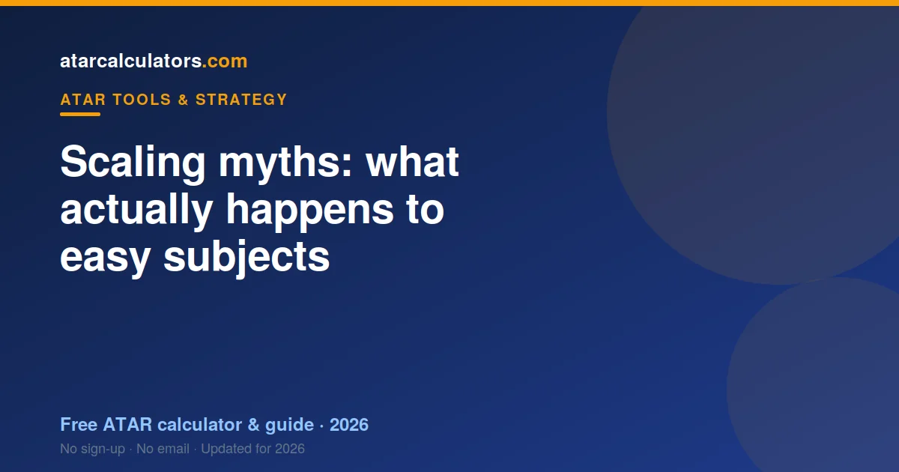

The biggest scaling myth is that “easy” subjects are punished and “hard” ones rewarded. In reality, scaling reflects how strong each subject’s cohort is, not its difficulty. A so-called easy subject with a strong cohort can scale well, and scaling never rescues a poor rank or reorders students within a subject.
Key takeaways
- Myth: easy subjects are punished. Reality: scaling reflects cohort strength.
- A so-called easy subject with a strong cohort can scale well.
- Scaling never rescues a poor mark — it acts on the whole subject.
- Your school does not affect how a subject scales.
- Scaling never reorders students within a subject.
- A strong rank in any subject still produces a solid scaled mark.

Myth: easy subjects always scale down
The myth says any “easy” subject is automatically scaled down. The reality is that scaling reflects the strength of a subject’s cohort, not how easy it feels.
A subject that seems approachable can scale reasonably if it happens to attract capable students. And even a lower-scaling subject still produces a strong scaled mark if you rank near the top of it.
So there is no blanket penalty for “easy” subjects. There is only the cohort, subject by subject, which is what scaling measures.
Myth: hard subjects always scale up
The flip side is the belief that any hard subject scales up. It does not. Difficulty alone does not lift scaling; cohort strength does.
A subject can feel genuinely hard and still scale modestly, if the students taking it are mixed in ability. The advanced maths and sciences scale up because they attract strong students, not simply because they are hard.
So choosing a subject for its tough reputation is a mistake. What matters is whether strong students take it, and whether you can be one of them.
Myth: scaling can rescue a poor mark
Some students hope that a high-scaling subject will rescue a poor result. It will not. Scaling shifts the whole subject; it does not lift a low rank to a high one.
If you rank near the bottom of a high-scaling subject, you get a low scaled mark. The scaling of the subject cannot compensate for a weak position within it.
So scaling is not a safety net. The reliable way to a strong scaled mark is to rank well, in a subject you can perform in.
Myth: your school affects how a subject scales
A common worry is that attending a smaller or less prestigious school will hurt your scaling. It will not. Scaling is applied to a subject across the whole state, not school by school.
Every student who sits a subject is part of the same statewide cohort for scaling purposes. Your school does not change how the subject scales, and it does not change your scaled mark.
What your school can affect is the teaching and support you receive, which influences your marks. But the scaling of the subject itself is statewide and school-blind.
Myth: scaling reorders students within a subject
Some fear that scaling could drop them below a classmate they outscored. It cannot. Scaling moves the whole subject up or down together, keeping every student in the same order.
If you ranked above someone in a subject, you still rank above them after scaling. The gaps between marks may change, but the order never does.
So beating your classmates in a subject always helps. Scaling never undoes a rank you earned.
Myth: you can game scaling
The myth of “gaming” scaling says you can boost your ATAR just by loading up on high-scaling subjects. You cannot, because scaling only rewards your rank within each subject.
Fill your program with high-scaling subjects you are weak in, and you rank low in all of them, gaining nothing. The scaling is real, but it is not a loophole.
The only reliable strategy is to perform well in subjects you can excel in. There is no shortcut around genuine performance.
Myth: last year’s scaling is fixed
Another myth treats a scaling report as permanent. In reality, scaling is recalculated every year, based on that year’s cohorts. So last year’s figures are a guide, not a guarantee.
The broad pattern is stable, but exact figures shift with enrolments and cohort strength. This is why you should use the latest information and not rely on an old list. See how scaling changes over the years.
What actually happens
Strip away the myths and the reality is simple. Scaling measures how strong each subject’s cohort is, and adjusts the whole subject accordingly, without ever reordering students or acting school by school.
So the winning approach is unglamorous but reliable: choose subjects you can excel in, rank as high as you can, and let scaling handle fairness across subjects. See the full explainer.
See the real numbers
The best antidote to scaling myths is real data. Our ATAR scaling calculator uses official figures to show exactly how each subject scales, from your mark to your scaled mark.
Try the subjects you are considering. Real numbers replace rumours, and they usually show that performing well matters more than any myth suggests.
Myth: dropping a subject boosts your scaling
Some students believe dropping a subject will somehow lift the scaling of the rest. It will not. Scaling is worked out per subject, from its own cohort, and is unaffected by which other subjects you take or drop.
Dropping a subject changes your workload and which results count towards your ATAR, but it does not change how any subject scales. So drop a subject for good reasons, such as focus or workload, not in the belief that it improves scaling.
Myth: scaling is secret or unfair
Scaling can feel like a black box, which breeds suspicion that it is secret or rigged. In reality, each admissions centre publishes its scaling figures every year, and the method is documented and applied uniformly.
Far from being unfair, scaling exists to be fair: it stops your ATAR from depending on your subject choice. The suspicion usually comes from not understanding the mechanism, not from any hidden bias. See the full explainer.
The reality in one line
Here is the reality behind every scaling myth, in one line: scaling reflects each subject’s cohort strength, adjusts the whole subject accordingly, and never reorders students or acts school by school.
Hold onto that, and the myths fall away. Choose subjects you can excel in, rank as high as you can, and let scaling do its fair, published, statewide work.
Why these myths persist
Scaling myths persist because scaling is easy to misunderstand and its results can feel counter-intuitive. When a strong raw mark scales down, it is natural to suspect a penalty, even though the cause is simply a broad cohort.
Understanding the mechanism dissolves the mystery. Once you see scaling as a fair, published adjustment based on cohort strength, the myths lose their grip and you can plan calmly.
Common questions
Do easy subjects always scale down?
No. Scaling reflects how strong a subject’s cohort is, not how easy it feels. A so-called easy subject with a strong cohort can scale reasonably, and even a lower-scaling subject produces a strong scaled mark if you rank near the top.
Is 'hard subjects scale up' a myth?
Partly. Hard subjects often scale up, but because they attract strong students, not because of the difficulty itself. A hard subject with a mixed cohort can scale modestly, so difficulty alone does not lift scaling.
Can scaling rescue a poor mark?
No. Scaling shifts the whole subject up or down; it does not lift a low rank to a high one. If you rank near the bottom of a high-scaling subject, you still get a low scaled mark.
Does your school affect scaling?
No. Scaling is applied to each subject across the whole state, not school by school. Your school does not change how a subject scales or what your scaled mark is.